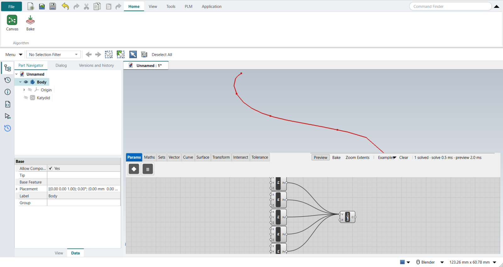
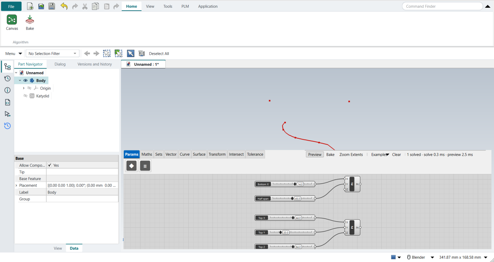
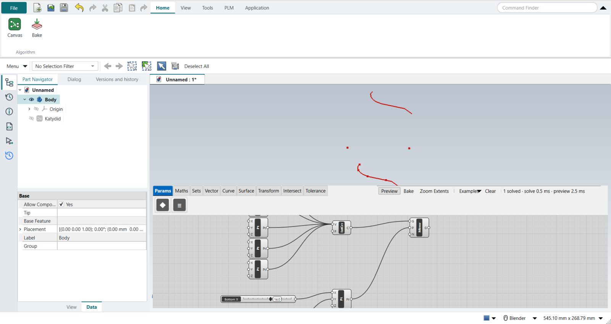
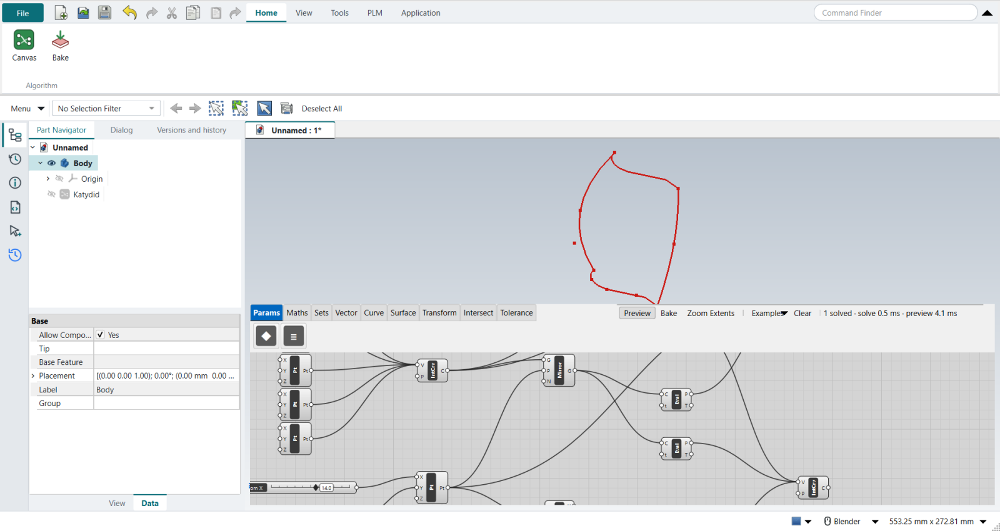
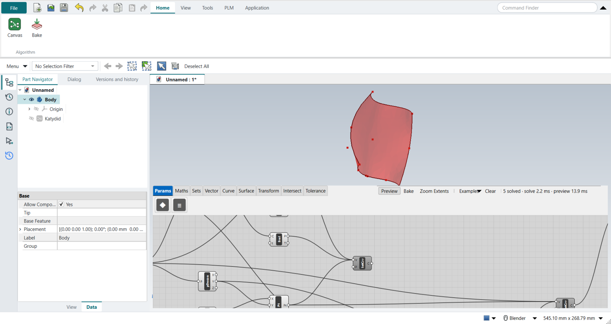
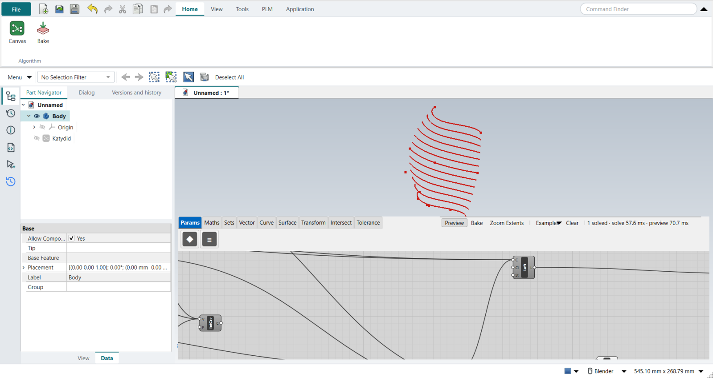
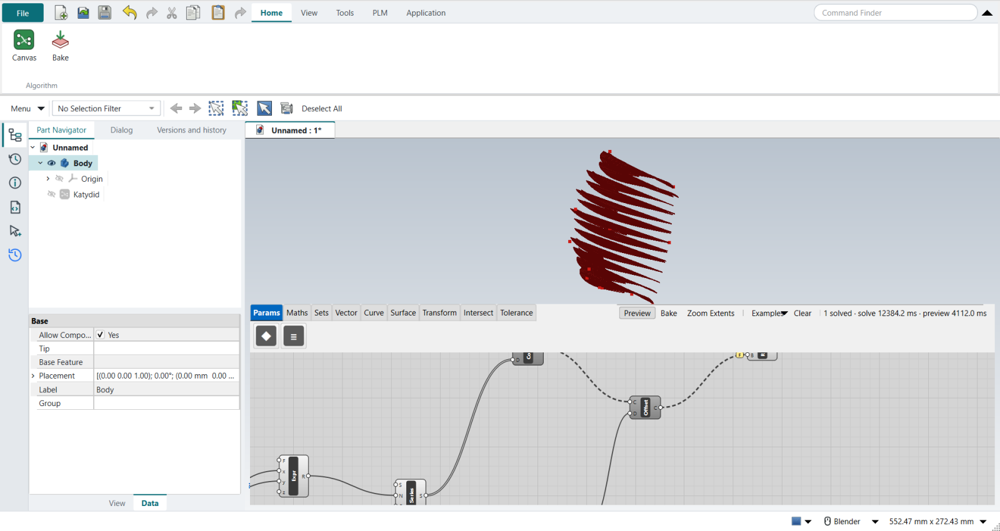

Tutorial P: Waffle canopy
| Video |
Grasshopper Tutorial For beginners (YouTube, channel Rhino Grasshopper) |
| Application |
Algorithmic Modeling (Katydid) |
| You learn |
Mirroring in a plane, merging points into a curve, a surface from boundary curves, contours, offset and ruled surfaces, extruding by a computed thickness |
| Sizes |
Millimetres: a 58 × 70 profile, a 90 mm span, 13 ribs 4 mm deep |
The canopy grows from one curve. Its mirror gives the far side, two arches close it at the bottom and the top, a surface spans the four, and parallel slices of that surface become the ribs.
Step by step
1. The profile
The video draws half of the profile in Rhino’s Front view and references it into a Curve parameter. Katydid cannot reference a FreeCAD sketch yet, so the profile is drawn on the canvas instead: five Construct Point components, their X and Z typed with right-click › Set value…, all wired into one Interpolate with Shift held, so they arrive in order.

2. The Bottom and Top points
Two more Construct Points stand in for the two Rhino points: Bottom (X 14, Y 45) sets the mirror plane and the bulge at the base, Top (X 44, Y 20, Z 84) the height and depth of the top arch. Sliders move them, as the Gumball does in Rhino.

3. Mirror
Mirror with the profile in G, the Bottom point in P and the normal N typed 0, 1, 0: the mirror plane is the XZ plane through the Bottom point.
Grasshopper builds that plane with an XZ Plane component; Katydid’s Mirror takes the point and the normal itself.
Dragging Half span now widens or narrows the canopy.

4. End points
Four Evaluate Curve components with t = 0 and t = 1 give the start and end of both curves (Grasshopper’s End Points; Katydid’s t always runs from 0 to 1).
5. The two arches
-
Bottom arch: the profile’s start, the Bottom point and the mirror’s start, Shift-wired into an Interpolate in that order. Several wires into one input merge their data in order, as Grasshopper’s Merge does.
-
Top arch: the same through the Top point projected onto the mirror plane. Two Deconstruct components and a Construct Point take the Top point’s X and Z and the Bottom point’s Y.

6. The surface
The video spans the four curves with Edge Surface, which Katydid does not have yet. A Loft through three sections stands in: the profile, a middle section from the Bottom point through the profile’s midpoint to the projected Top point, and the mirror. It passes through both arches at their middle, where the bulge is.

7. Contours
Contour the surface along Y: N typed 0, 1, 0, and D a Series of plane offsets.
The span is the Distance between the two start points; an Expression divides it by the Count slider (12), and an Addition gives count + 1 planes: 13 ribs.
| The video subtracts 0.001 from the spacing so the last slice is not lost on the edge. Katydid’s Contour cuts a fine mesh, where a plane that close to the edge splits into fragments, so the first and last planes sit 1 mm inside instead. |

8. Rib strips
Offset Curve moves each contour by the Rib depth (4 mm) in its own plane. Ruled Surface spans each contour and its offset, both inputs Flattened (right-click › Flatten), so the curves pair up one to one.

The replay
| # | In the book (NX) | In FreeCAD NX-Style | Result | Notes |
|---|---|---|---|---|
P1 |
Rhino’s Front view; open Grasshopper |
Ctrl+N + Application > Algorithmic Modeling |
same |
an empty canvas on the new part |
P2 |
Draw half of the profile in Rhino’s Front view; Curve > Set one Curve |
stand-in: five Construct Points (X and Z typed with Set value…) Shift-wired into Interpolate |
missing |
profile from Vector (0.0, 0.0, 0.0) to Vector (58.0, 0.0, 70.0), length 108.4 mm. Katydid has no Curve parameter that follows a FreeCAD sketch yet (asked for): the points are typed instead of drawn |
P3 |
Two Rhino points, Bottom and Top, referenced into Point parameters (moved with the Gumball) |
stand-in: two Construct Points driven by sliders |
missing |
bottom Vector (14.0, 45.0, 0.0), top Vector (44.0, 20.0, 84.0); sliders move them, as the Gumball does in Rhino |
P4 |
XZ Plane at the Bottom point; Mirror the curve in it |
Mirror: G = the profile, P = the Bottom point, N typed 0, 1, 0 (Katydid’s Mirror takes the plane as a point and a normal) |
differs |
mirrored profile at y = 90.0; the span is twice the Bottom point’s Y |
P5 |
End Points of both curves |
stand-in: Evaluate Curve at t = 0 and t = 1 on each |
missing |
{'s0': (0.0, 0.0, 0.0), 'e0': (58.0, 0.0, 70.0), 's1': (0.0, 90.0, 0.0), 'e1': (58.0, 90.0, 70.0)}. Katydid has no End Points component yet (asked for); Evaluate Curve’s t runs from 0 to 1 along the curve |
P6 |
Bottom arch: Merge (start, Bottom point, mirrored start) into Interpolate; top arch the same through the Top point Projected onto the mirror plane |
Merge: the three points Shift-wired into Interpolate’s V in order; Project stand-in: Deconstruct the Top point, its Y replaced by the Bottom point’s |
differs |
arches pass through the Bottom point and the projected Top point at (0.0, 0.0) mm. Shift-wiring several sources into one input merges them in order (Grasshopper does the same); Katydid has no Merge or Project component yet |
P7 |
Edge Surface from the four boundary curves (a loft would ignore the arches) |
stand-in: Loft through the profile, a middle section (Bottom point, the profile’s midpoint on the mirror plane, the projected Top point) and the mirrored profile |
missing |
surface area 9023 mm^2; it passes through the Bottom point and the projected Top point ((0.0, 0.0) mm), so it follows the arches at their middle. Katydid has no Edge Surface yet (asked for) |
P8 |
Contour the surface along Unit Y; distance = span / count (Distance, Division); edge fix x - 0.001 |
Contour with N typed 0, 1, 0 and D = a Series of offsets: 1 mm, then (span - 2) / count apart, count + 1 of them, so the first and last planes sit 1 mm inside the edges |
differs |
13 contour curves for count 12, 7.333333333333333 mm apart; per plane [1, 1, 1, 1, 1, 1, 1, 1, 1, 1, 1, 1, 1]. Katydid’s Contour takes one plane offset per item, so a Series lists them; Division is an Expression here |
P9 |
Offset Curve by the rib depth; Ruled Surface between each contour and its offset (both Flattened) |
Offset Curve with a 'Rib depth' slider; Ruled Surface: A = the contours, B = their offsets, both inputs Flattened (right-click > Flatten) |
same |
13 flat rib strips, 19395 mm^2 in all |
P10 |
Extrude the strips along Y by spacing x a thickness ratio (Multiplication, Unit Y) |
Multiplication (spacing x 'Thickness ratio' 0.3) into Vector XYZ’s Y, into Extrude’s D |
same |
13 solid ribs, 41284 mm^3; thickness [2.2] mm (spacing 7.333333333333333 x 0.3 = 2.2000) |
P11 |
Custom Preview with a Colour Swatch |
- |
missing |
Katydid previews everything in one colour (red, green when selected); per-component colours are not there yet (asked for) |
P12 |
Bake the ribs; Internalise the referenced curve |
select Extrude + ribbon 'Home › Algorithm > Bake' |
same |
13 rib solids in the Part Navigator, 41284 mm^3. Nothing to internalise: the profile’s points are typed on the canvas, not referenced |
| Result | Means |
|---|---|
same |
The book’s NX steps work as written. |
differs |
It works, but the FreeCAD way is different; the notes say how. |
limit |
The book’s way fails in FreeCAD itself; a workaround follows in the next steps. |
missing |
FreeCAD has no such function; a stand-in follows. |
skipped |
Not replayed; the notes give the reason. |
FAILED |
Did not work. |